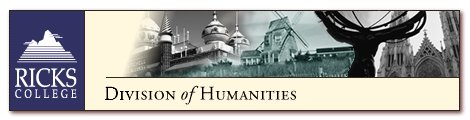

| Department of Communication |
| Department of English |
| Department of Foreign Language |
| Department of Humanities |
| The Division of Humanities' goal is to enhance the ability of students to see beauty
in the world. Four departments make up the division: the Humanities Department explores
beauty in art, music, architecture, and more; the English Department explores beauty in
literature and the power in composition; the Foreign Language Department delivers the same
exploration of literature and composition after students master basicspeaking skills in
Spanish, French, German, Russian, and some Mandarin Chinese; the Communication Department
also tackles language with courses in American SignLanguage and then offers a delightful
selection of other classes which begin to pull all of the beauty into a practical
application of people understanding people. The Ricks College Department of English is dedicated to the improvement and enhancement of the English skills of students at every level and ability. Students will find course offerings directed to a wide range of interests from those that fulfill General Education requirements to Honors courses (Honors Shakespeare is a studentfavorite). The English Department offers a training ground for those seriously interested in improving their reading, writing, and thinking skills. The Department of Foreign Languages offers students the opportunity to develop language and cultural skills in French, German, Russian and Spanish. Although we offer an Associate Degree in each of these languages, our greater role is to strengthen the general education and intercultural understanding of our students. The Department of Humanities is committed to the concept that a Liberal Arts education forms the basis for every other academic discipline. The Associate of Arts and Sciences Degree with a major in Humanities prepares the student for transfer to a four-year degree program at any university. Our curriculum has been designed not only to enrich but to strengthen future study in law, political science, education, and business administration. Current job recruitment practices indicate that individuals with a strong liberal arts background have a definite edge in their career preparation. |
Ricks College Home Page
Academic Programs | Apply to Ricks | Catalog
| Class Schedule | Financial Aid | Food Services
| Housing
| Registration | About Ricks | Continuing Education | Devotionals | Employment | Library | News
| Events | Sports | President's Message | Student Life | Alumni & Friends | Current Students | Employees | Prospective Students
©Ricks College 1999